class: center, middle # Building Agents with MCP ## *The HTTP Moment of AI?* --- class: center, middle # Introduction to MCP --- class: center, middle # What is MCP? --- class: center, middle ## Open Protocol to standardize connections between LLMs and Context 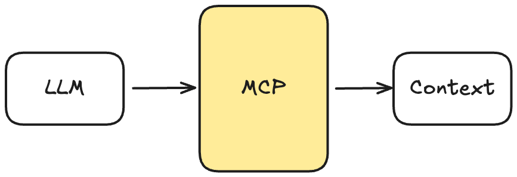 --- class: center, middle ## MCP is what makes AI actually useful for real apps --- class: center, middle # MCP Core Components --- class: center, middle .center[ 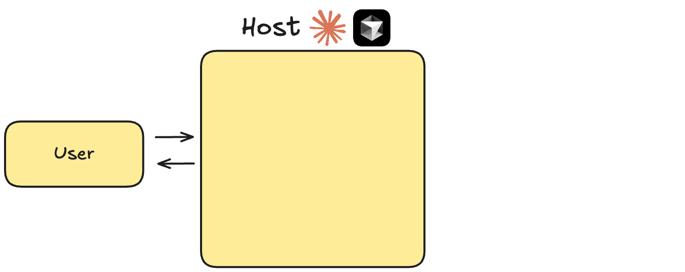 ] --- class: center, middle .center[ 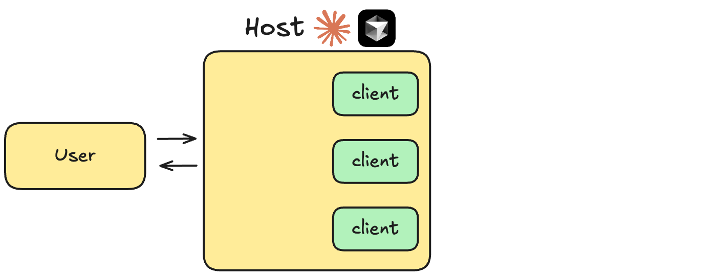 ] --- class: center, middle .center[ 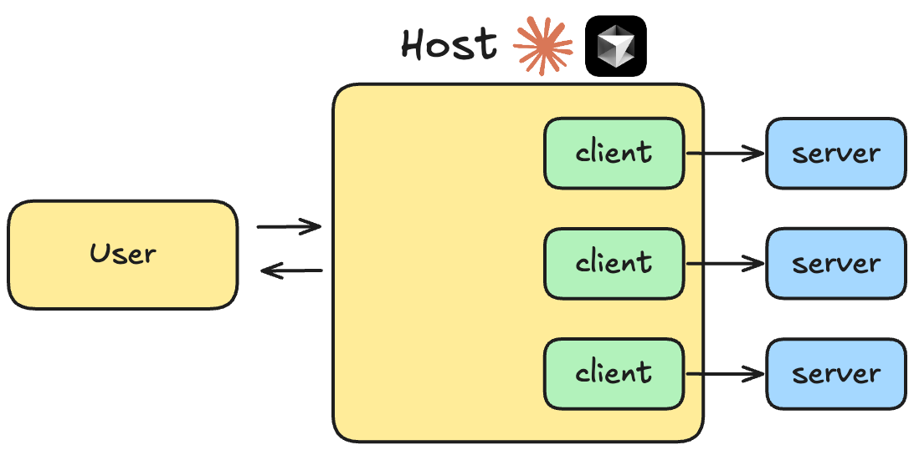 ] --- class: center, middle 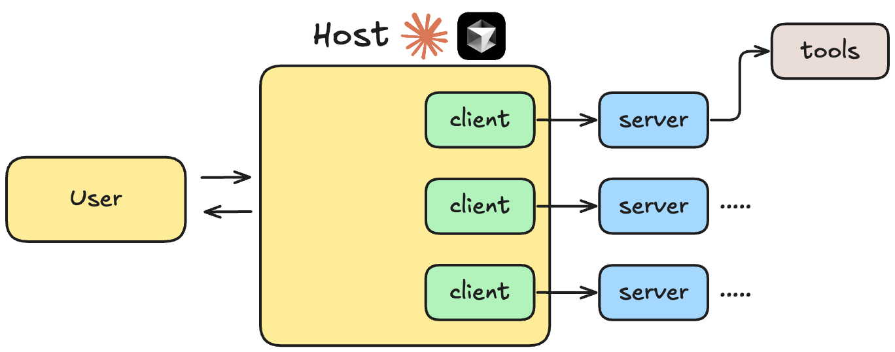 --- class: center, middle 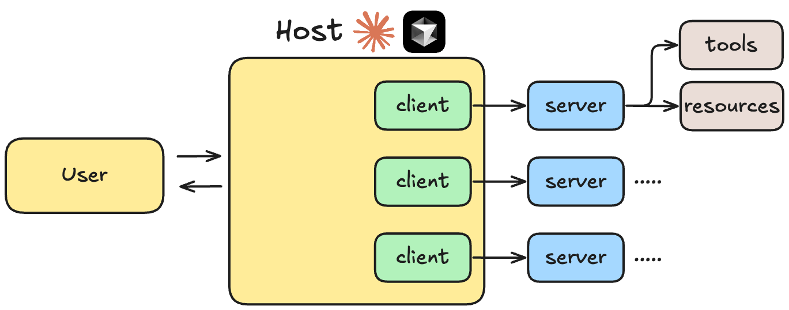 --- class: center, middle 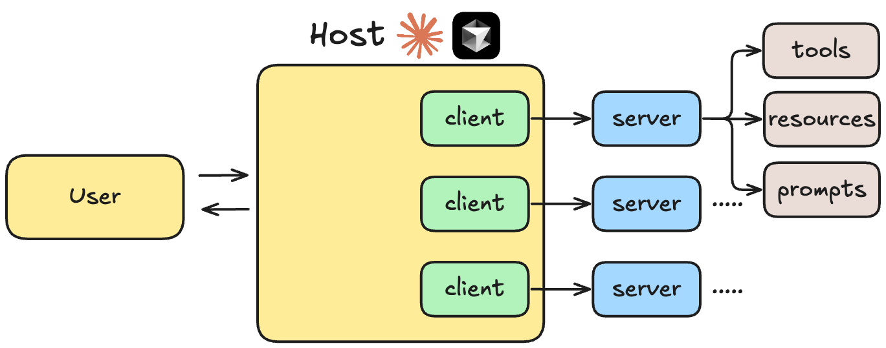 --- class: center, middle # MCP is Growing Super Fast .center[ <img src="../notebooks/assets-resources/mcp-stars-on-github.png" alt="MCP GitHub Stars Growth" style="width: 80%; height: auto; display: block; margin: 10px auto;"> ] --- # Host - User-facing AI application (ChatGPT, Claude Desktop, Cursor) -- - Manages user interactions and permissions -- - Orchestrates flow between user requests, LLM, and tools -- - Renders results back to users # Client - 1:1 connection with a single Server -- - Handles protocol-level MCP communication -- - Acts as intermediary between Host and Server -- - Manages capability discovery and invocatio --- # Server - External program/service exposing capabilities -- - Lightweight wrapper around existing functionality -- - Can run locally or remotely -- - Exposes capabilities in standardized format -- - Provides access to tools, data sources, or services --- # Communication Flow .center[ 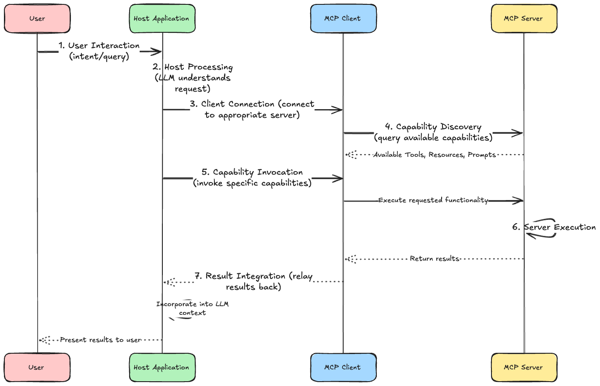 ] --- # Communication Flow **1. User Interaction** **2. Host Processing** **3. Client Connection** **4. Capability Discovery** **5. Capability Invocation** **6. Server Execution** **7. Result Integration** --- class: center, middle <h1> <span style="background-color: lightgreen"> Demo - Practical Introduction to MCP SDK </span> </h1> --- class: center, middle <h1> <span style="background-color: lightgreen"> Demo - Creating our First MCP Server </span> </h1> <h2> (and using it with Claude Desktop!) </h2> --- class: center, middle # MCP Capabilities: Tools, Resources, Prompts & Sampling --- class: center, middle # MCP Capabilities --- ## Core Primitives - **Tools** -- - **Resources** -- - **Prompts** -- - **Sampling** --- ## Tools -- - Model-controlled executable functions -- - Require user approval -- - Can have side effects -- - Example: Fetching GitHub repository data, sending emails, or updating a database ```python def send_email(to: str, subject: str, body: str) -> str: """ Send an email to the given address """ ... # Implementation logic return { "status": "success" } ``` -- - **Tools** are the most powerful MCP capabilities --- ## Resources -- - Application-controlled data access -- - Read-only operations -- - Example: File contents, database records ```python def get_file_contents(file_path: str) -> str: """ Get the contents of a file """ ... # Implementation logic return { "contents": "File contents" } ``` --- ## Prompts - User-controlled templates -- - Structure interactions -- - Guide workflows -- - Example: Code review templates ```python def plan_project(project_name: str) -> str: """ Plan a project """ ... # Implementation logic return { "plan": "Project plan" } ``` --- ## Sampling - Server-initiated LLM interactions -- - Requires client facilitation -- - Enables agentic behaviors -- - Example: Multi-step analysis ```python def request_sampling(messages, system_prompt=None, include_context="none"): """Request LLM sampling from the client.""" ... # Implementation logic return { "role": "assistant", "content": "Analysis of the provided data..." } ``` --- class: center, middle <h1> <span style="background-color: lightgreen"> Whiteboard - How MCP Capabilities Work Together </span> </h1> --- class: center, middle <h1> <span style="background-color: lightgreen"> Demo - Implementing MCP Tools, Resources, Prompts & Sampling </span> </h1> --- class: center, middle # Building Agents with MCP --- class: center, middle 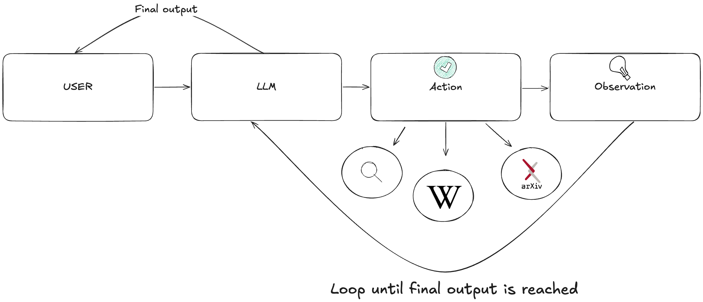 --- class: center, middle 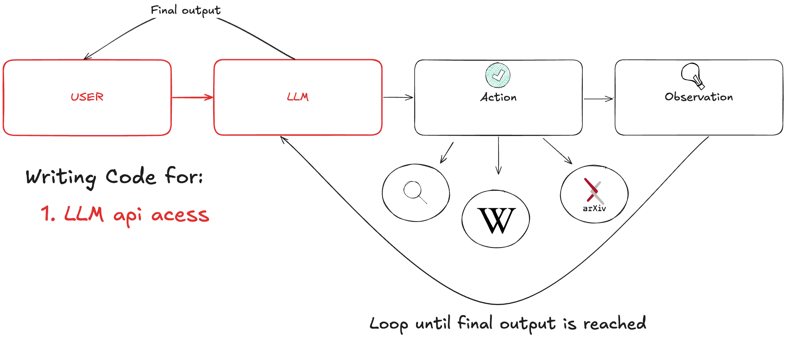 --- class: center, middle 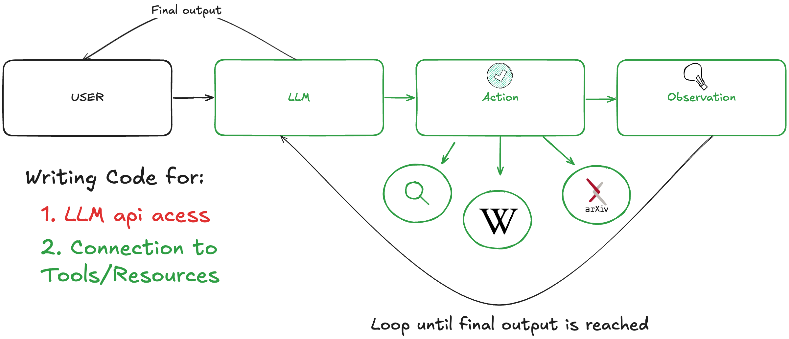 --- class: center, middle 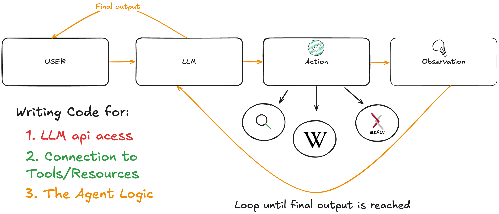 --- # The MN Integration Problem: Multiple LLMs .center[ 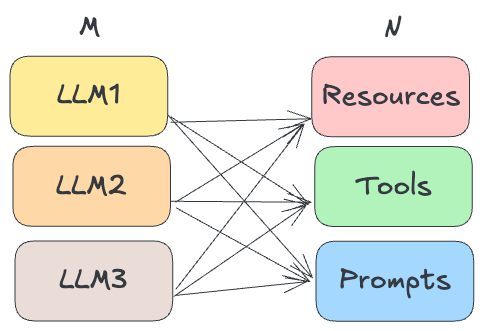 ] --- # The MN Integration Problem: Multiple LLMs .center[ 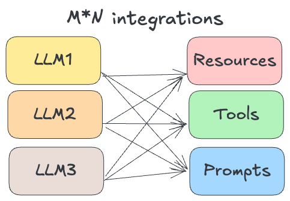 ] --- # The MN Integration Problem: Multiple LLMs .center[ 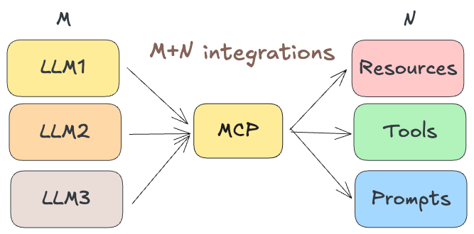 ] --- # MCP Simplifies the Integration of Problem for Agent Development .center[ ] --- class: center, middle <h1> <span style="background-color: lightgreen"> Whiteboard - Agent Development in the Era of MCP </span> </h1> --- class: center, middle <h1> <span style="background-color: lightgreen"> Demo - Building Agents with MCP Using Google's ADK </span> </h1> --- class: center, middle <h1> <span style="background-color: lightgreen"> Demo - Building Agents with MCP Using LangGraph </span> </h1> --- class: center, middle <h1> <span style="background-color: lightgreen"> Demo - Building Agents with MCP Using OpenAI's Agent SDK </span> </h1> --- class: center, middle #Workflow Automation Revolution --- #Workflow Automation Revolution - Pro tip: use MCP in an app like Claude or Cursor to feel the power of MCP -- - Data analysis across multiple systems without custom code -- - Automated reporting and insights -- - Context-Aware Applications that can communicate with context and other apps easily -- - Personal assistants with deep system access (Claude Desktop) -- - Development environments with intelligent tooling (Claude-Code, Cursor) -- - Multi-Language Support (Python, TypeScript, Swift, Kotlin, Java, Go) --- class: center, middle <h1> <span style="background-color: lightgreen"> Fun Demo Time! - Using MCP from Claude Desktop and Cursor! Hacks, Tips, and Tricks! </span> </h1> --- class: center, middle # MCP Security Considerations --- # ⚠️ Security Risks: MCP Vulnerabilities - **Critical "Tool Poisoning Attacks" Discovered** -- - Malicious instructions embedded in MCP tool descriptions -- - Instructions invisible to users but visible to LLMs -- - **Potential Damage:** Data exfiltration, hijacked agent behavior -- - **Mitigation Strategies:** Tool pinning, clear UI patterns, cross-server protection -- - **Reference:** [Invariant Security Research](https://invariantlabs.ai/blog/mcp-security-notification-tool-poisoning-attacks) -- **Key Takeaway:** Extensive guardrailing needed for production deployments --- # The Protocol "Wars" -- ## MCP vs A2A vs ACP **Three Major Players Competing/Complimenting? for Standardization:** -- **MCP (Anthropic):** AI-to-tool communication and data access -- **A2A (Google):** Agent-to-agent system communication, secure collaboration -- **ACP (IBM Research):** Agent Communication Protocol, focuses on practical adoption first -- **The Stakes:** Who becomes the "HTTP" of AI agent communication? -- **Current Reality:** Fragmentation risk vs innovation through competition --- # The Growing MCP Ecosystem .center[ <img src="../notebooks/assets-resources/mcp-market-map.png" alt="MCP Market Map" style="width: 80%; height: auto; display: block; margin: 0 auto;"> ] --- class: center, middle <h1> <span style="background-color: lightgreen"> Whiteboard + Demo - Practical MCP Security Tips </span> </h1> --- # Connect With Me ## 📚 [Blog](https://enkrateialucca.github.io/lucas-landing-page/) ## 🔗 [LinkedIn](https://www.linkedin.com/in/lucas-soares-969044167/) ## 🐦 [Twitter/X](https://x.com/LucasEnkrateia) ## 📺 [YouTube](https://www.youtube.com/@automatalearninglab) ## 📧 Email: lucasenkrateia@gmail.com